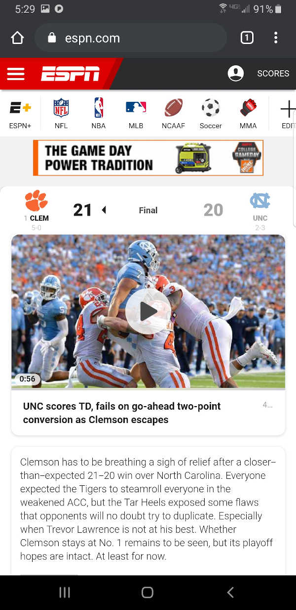
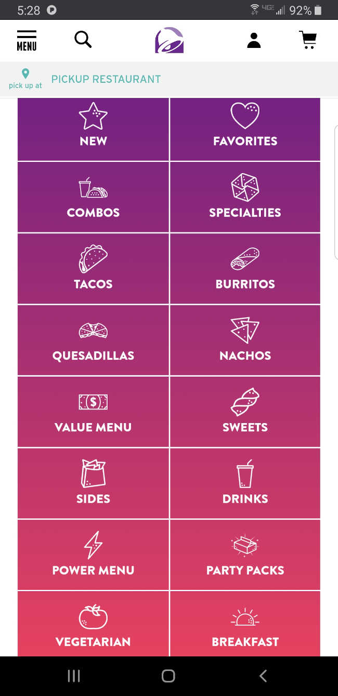

The Adobe webpage utilizes the principle of contrast using colors. The first thing a viewer is greeted with is the image with very bright colors on a plain white background, immediately grabbing their attention. Additionally, the page has a sharp contrast between the font weights and sizes.
Design Principles
Contrast - Adobe
Visit adobe.com
Fitts' Law - ESPN
Visit espn.com
The ESPN webpage utilizes the Fitts' Law by immediately providing the user with information about the current game, providing them with a huge video player with recent game highlights.
Repetition - Tacobell
Visit tacobell.com
Tacobell's website utilizes the principle of repetiton to make a bunch of menu options feel like one cohesive part of the page. They use a repetitive grid to organize their menu items, labeling all with the same font, and similar iconography.